5G
TODO:
把
- Qualcomm Future of 5G Building a unified, more capable 5G air interface for the next decade and beyond
- The-5G-Guide_GSMA_2019_04_29_compressed.pdf
中关于5G技术内容整理过来
关于5G更多细节，详见：5G技术概述
- 5G
- =
fifth generation 3GPP组织制定的标准- 概述
- 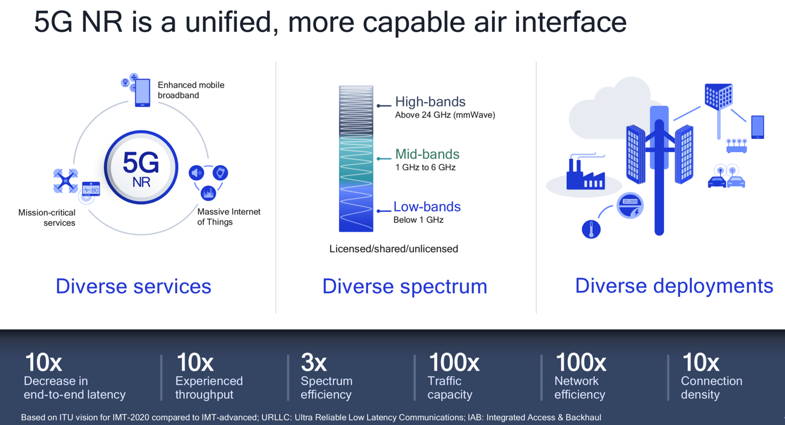
- 频段范围
FR1=Frequency Range 1- 包括 sub-6 GHz
FR2=Frequency Range 2- 包括了
mmWave=mm-wave的24–100GHz
- 包括了
- 2G到5G频谱对比
- 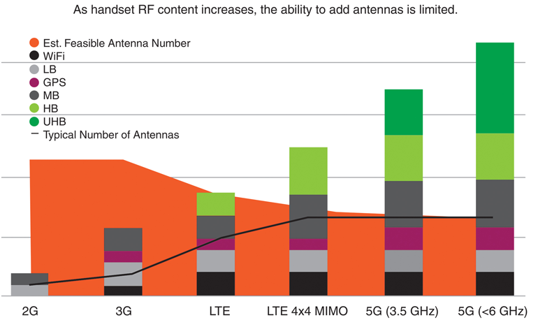
- 相关技术
- Massive MIMO
- 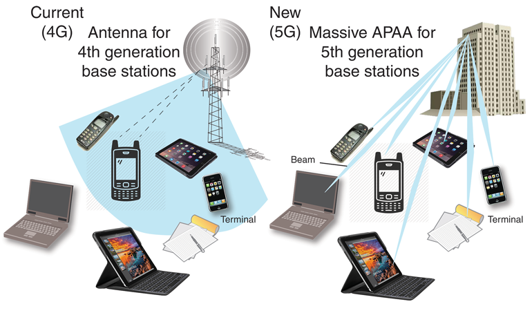
- Massive MIMO
- 架构
- 总体架构
- Reference Point Architecture of 5G Core Network
- 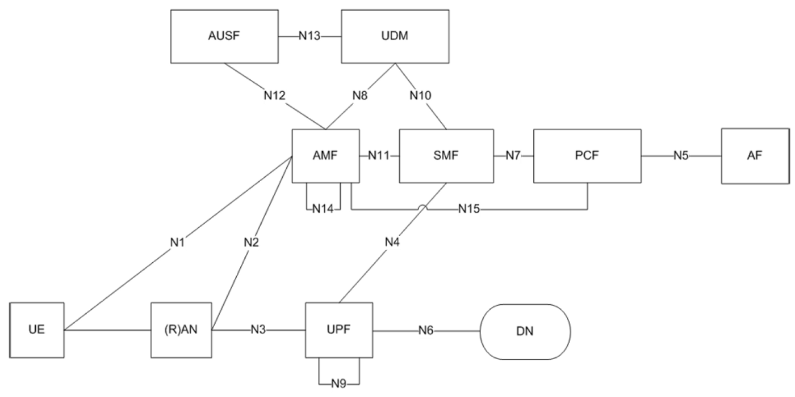
- Service-based Architecture of 5G Core Network
- 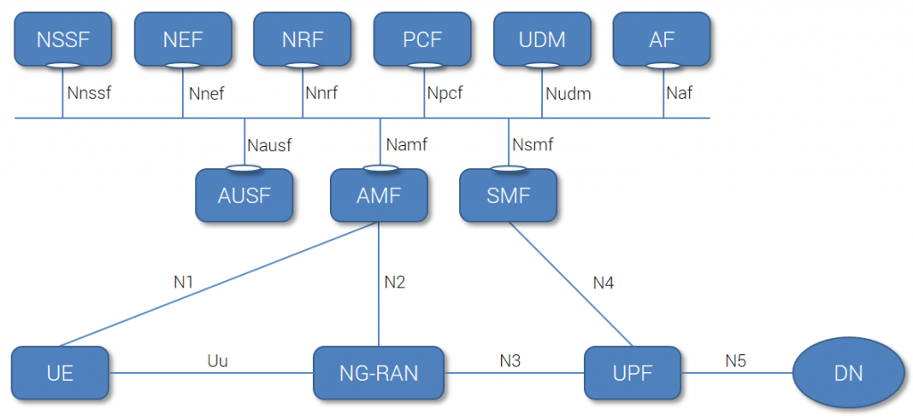
- Reference Point Architecture of 5G Core Network
- 细节
- Policy Control Mechanism in 5G Core Network
- 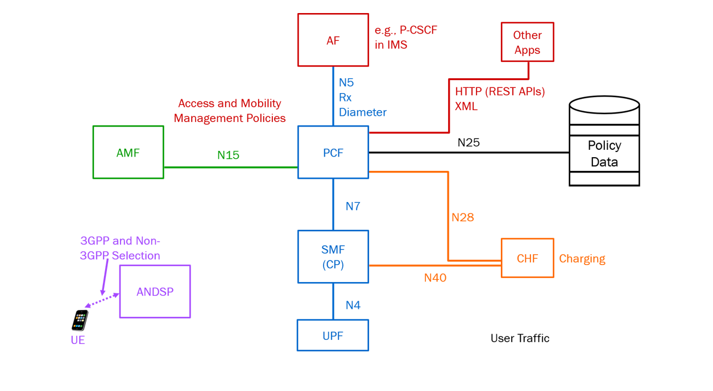
- Policy Control Mechanism in 5G Core Network
- 总体架构
- 核心元素=核心功能(function)
- 包含
AMF=Access and Mobility Management functionSMF=Session Management functionUPF=User plane functionPCF=Policy Control FunctionAUSF=Authentication Server FunctionUDM=Unified Data ManagementAF=Application FunctionNEF=Network Exposure functionNRF=NF Repository functionNSSF=Network Slice Selection Function
- Classification of 5G Core Networks
- 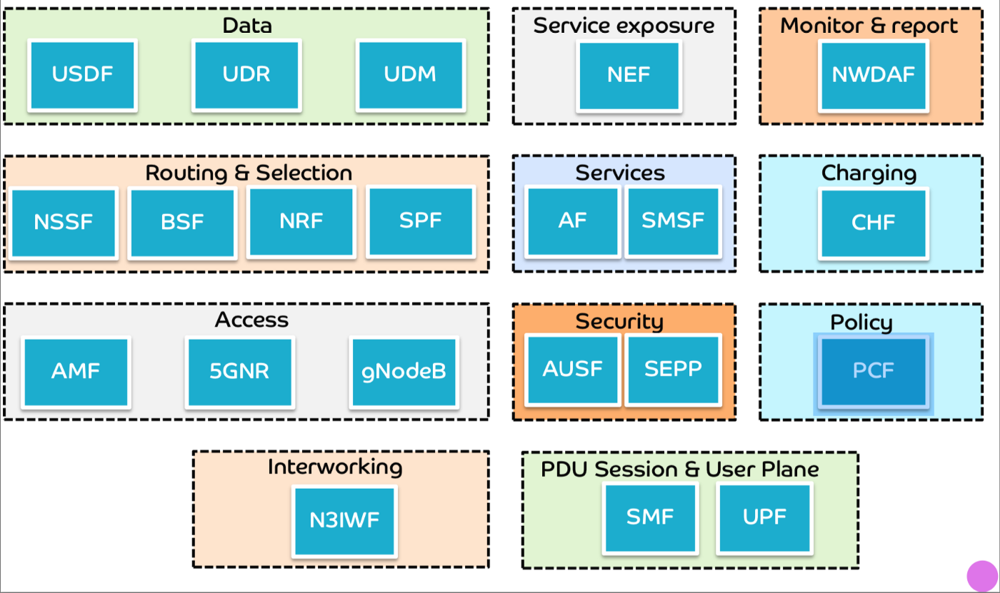
- 包含
- =
4G vs 5G
- 4G和5G技术参数对比
| Technology | Data Rates | Latency | Mobility Support | Spectrum Efficiency | Users Density | Energy Efficiency |
|---|---|---|---|---|---|---|
| 5G (NR) | Avg 100 Mb/s Peak 20 Gb/s |
~ 1 ms | >500 Km/h | x3 Better DL- 30 bits/Hz UL- 15bits/Hz |
1000K/Km2 | x100 Better |
| 4G (LTE) | Avg 25 Mb/s Peak 300 Mb/s |
~10- 50 ms | <=350 Km/h | DL – 6 bits/Hz UL- 4 Bits/Hz |
~ 2K/Km2 | Moderate |
- 4G和5G核心网络功能演化对比
- Comparison of 4G Core Network and 5G Core Network
- 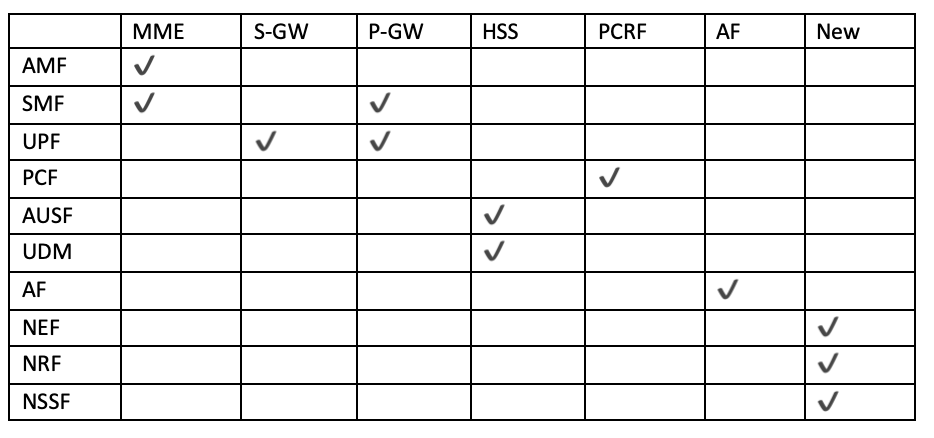
- Transformation of 4G Core Network Functions to 5G Core Network Functions
- 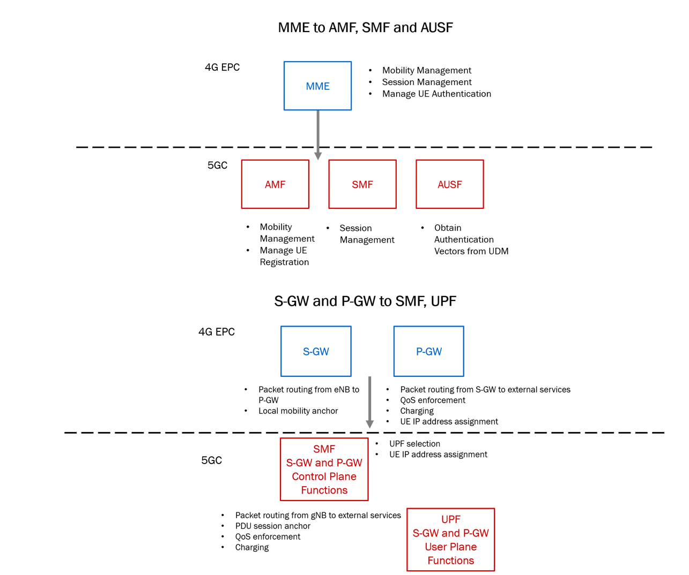
- 具体细节
- Transformation of MME into AMF&UDM
- 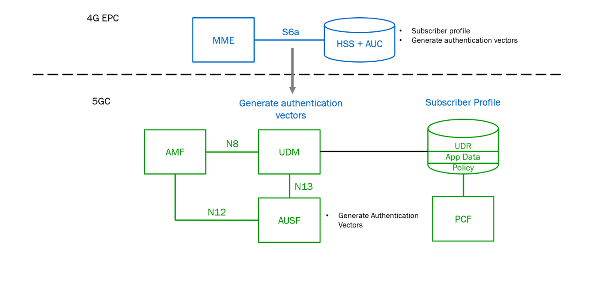
- Transformation of MME into AMF&UDM
- Comparison of 4G Core Network and 5G Core Network
5G应用
- 应用
- 概览
- 概览
5G标准版本历史
- 5G标准版本历史
- 图
- 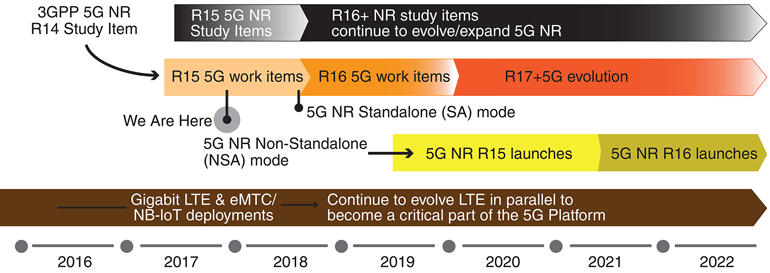
- 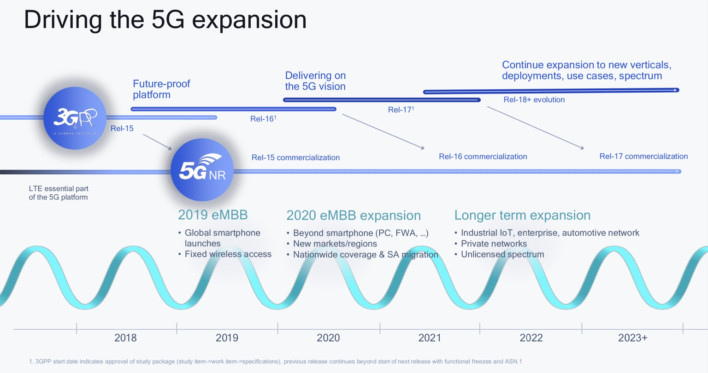
- THE 3GPP ROADMAP FOR RELEASE 15 AND 16
- 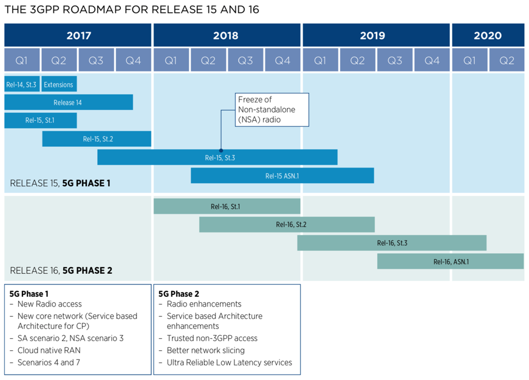
- 文字
- 2015年：开始研究
- 2017年：第一次发布 5G NSA
- 2018年：3GPP
Release 15=5Gphase 1eMBB=Enhanced Mobile BroadbandURLLC=Ultra-Reliable and Low Latency Communication
- 2020年6月：3GPP
Release 16=5Gphase 2mMTC=massive Machine Type CommunicationV2V=Vehicle to Vehicle
- 预计2021年：
Release 17
- 图
运营商支持5G情况
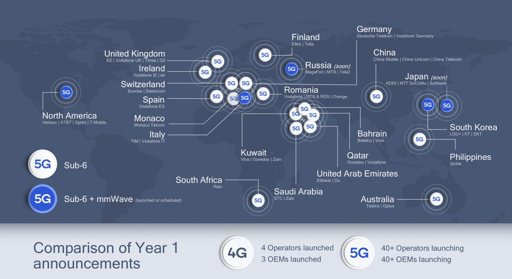